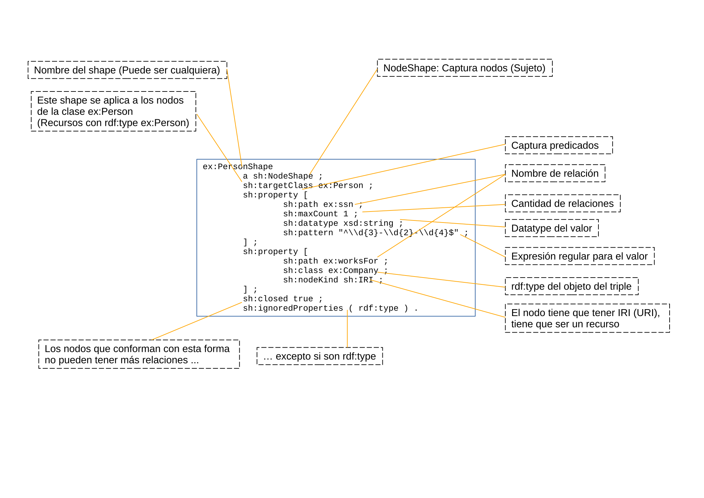

SHACL
Mikel Egaña Aranguren
mikel-egana-aranguren.github.io

Mikel Egaña Aranguren
Mikel Egaña Aranguren
mikel-egana-aranguren.github.io
https://github.com/mikel-egana-aranguren/ABD

https://www.linkedin.com/posts/holger-knublauch-098615294_1-introduction-activity-7427510751189278720-X4Lj?utm_source=share&utm_medium=member_desktop&rcm=ACoAAAGk_tsBweQ8bVNO23ZvS3woQOVkJqx6UMU https://www.w3.org/TR/shacl12-core/#intent https://www.w3.org/TR/shacl12-core/#agentInstruction "SHACL may be used for a variety of purposes such as validating, inferencing, modeling domains, generating ontologies to inform other agents, building user interfaces, generating code, and integrating data." https://www.w3.org/TR/shacl12-core/#abstract
SHApes Constraint Language
Define la forma que un grafo RDF debería tener: que relaciones, a que nodos, con que valores, etc.
Se validan datos RDF contra esa forma, y se genera un informe que dice si los datos cumplen la forma o no (ValidationReport, en RDF)
SHACL es un recomendación (Estándar) del W3C: (W3C)
El vocabulario SHACL, definido en RDF, contiene todo el lenguaje SHACL
El mismo lenguaje RDF para definir datos (RDF) esquema (SHACL) e informes de resultados (ValidationReport) (NoSQL!RDF!)
Confusión muy común: OWL como lenguaje de esquema
OWL es un lenguaje de inferencia, no de esquema (*): por ejemplo, no dice cuántas relaciones tiene que tener una instancia, si no que si nos encontramos una instancia con esas relaciones, se infiere que pertenece a cierta clase
(*) Se puede conseguir "cerrar" el mundo en OWL, pero con ciertos axiomas y no por defecto
Confusión muy común: OWL como lenguaje de esquema
SHACL sí es un lenguaje de esquema: por ejemplo, nos dice cuántas relaciones tiene que tener una instancia, y si esa instancia no las tiene, es inválida

Crear repositorio activando opción SHACL
Los shapes residen en un grafo específico:
[Ejecutar ejemplos ex1, rdf_type]
sh:NodeShape: define restricciones sobre nodos del grafo
sh:PropertyShape: define restricciones sobre propiedades
sh:targetClass, sh:targetNode, sh:targetSubjectsOf, sh:targetObjectsOf: qué nodos validar
sh:path: qué propiedad validar
sh:minCount: número mínimo de valores (≥ 0)
sh:maxCount: número máximo de valores (≥ 0)
Ejemplo: una persona debe tener exactamente un nombre
ex:PersonShape a sh:NodeShape ;
sh:targetClass ex:Person ;
sh:property [
sh:path ex:name ;
sh:minCount 1 ;
sh:maxCount 1
] .sh:class: el valor debe ser instancia de una clase
sh:datatype: el valor debe tener un datatype específico
sh:nodeKind: tipo de nodo (IRI, Literal, BlankNode)
sh:property [
sh:path ex:birthDate ;
sh:datatype xsd:date ;
sh:maxCount 1
] .sh:in: el valor debe estar en una lista específica
sh:hasValue: debe existir un valor específico
sh:minExclusive, sh:maxExclusive: rangos numéricos
sh:minInclusive, sh:maxInclusive: rangos numéricos inclusivos
sh:minLength, sh:maxLength: longitud de strings
sh:pattern: expresión regular que debe cumplir
sh:languageIn: idiomas permitidos para literales
sh:uniqueLang: cada idioma solo puede aparecer una vez
sh:property [
sh:path rdfs:label ;
sh:uniqueLang true
] .sh:not: negación de una shape
sh:and: conjunción (todas las shapes deben cumplirse)
sh:or: disyunción (al menos una shape debe cumplirse)
sh:xone: disyunción exclusiva (exactamente una debe cumplirse)
sh:node: el valor debe cumplir otra shape
sh:property: define restricciones anidadas
sh:qualifiedValueShape + sh:qualifiedMinCount/MaxCount: cuántos valores deben cumplir una shape
Permite validaciones complejas y composición de shapes
sh:closed true: solo se permiten las propiedades declaradas
sh:ignoredProperties: lista de propiedades que se ignoran
ex:PersonShape a sh:NodeShape ;
sh:targetClass ex:Person ;
sh:closed true ;
sh:ignoredProperties ( rdf:type ) ;
sh:property [
sh:path ex:name
] .sh:severity: nivel de gravedad de una violación
sh:Violation (por defecto): error crítico
sh:Warning: advertencia
sh:Info: información
Permite diferenciar validaciones obligatorias de recomendaciones
sh:message: mensaje descriptivo para violaciones
Puede ser multilingüe usando language tags
sh:property [
sh:path ex:age ;
sh:datatype xsd:integer ;
sh:minInclusive 0 ;
sh:message "La edad debe ser un entero no negativo"@es ;
sh:message "Age must be a non-negative integer"@en
] .sh:path soporta caminos complejos:
Secuencia: ( ex:parent ex:age ) - padre.edad
Alternativa: [ sh:alternativePath ( ex:email ex:phone ) ]
Inverso: [ sh:inversePath ex:knows ]
Zero o más: [ sh:zeroOrMorePath ex:parent ]
Uno o más: [ sh:oneOrMorePath ex:subClassOf ]
sh:target con SPARQL queries personalizadas
ex:CustomShape a sh:NodeShape ;
sh:target [
a sh:SPARQLTarget ;
sh:select """
SELECT ?this WHERE {
?this ex:score ?score .
FILTER (?score > 90)
}
"""
] .Extensión avanzada: validaciones con queries SPARQL
sh:sparql permite restricciones arbitrariamente complejas
Más expresivo que SHACL Core pero menos eficiente
Útil para validaciones que requieren razonamiento complejo
ex:UniqueEmailShape a sh:NodeShape ;
sh:targetClass ex:Person ;
sh:sparql [
sh:message "Email must be unique" ;
sh:select """
SELECT $this ?email WHERE {
$this ex:email ?email .
?other ex:email ?email .
FILTER ($this != ?other)
}
"""
] .Resultado de validación en RDF:
sh:ValidationReport con sh:conforms (true/false)
sh:ValidationResult para cada violación:
ShEx (Shape Expressions): alternativa a SHACL
Sintaxis más concisa, inspirada en RELAX NG
SHACL: estándar W3C, más adoptado en industria
ShEx: más usado en academia, investigación biomédica
Ambos permiten validar grafos RDF
Validación de calidad de datos en Knowledge Graphs
Definir contratos de datos entre sistemas
Documentación ejecutable de esquemas de datos
Generación automática de formularios de entrada
Testing de transformaciones de datos
SHACL Playground: editor online
pySHACL: validador Python
Apache Jena SHACL: Java
GraphDB, Stardog: soporte SHACL integrado
Usar sh:message descriptivos en múltiples idiomas
Organizar shapes en módulos reutilizables
Separar validaciones críticas (Violation) de recomendaciones (Warning)
Documentar shapes con rdfs:label y rdfs:comment
Preferir SHACL Core sobre SHACL-SPARQL cuando sea posible